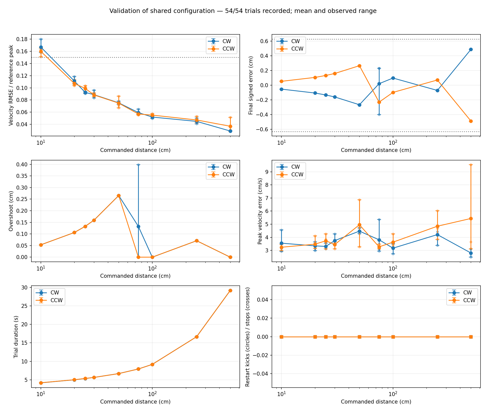
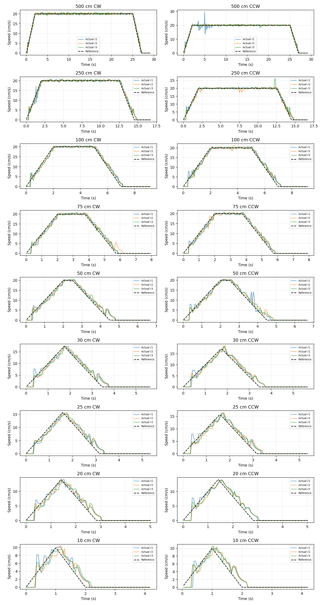
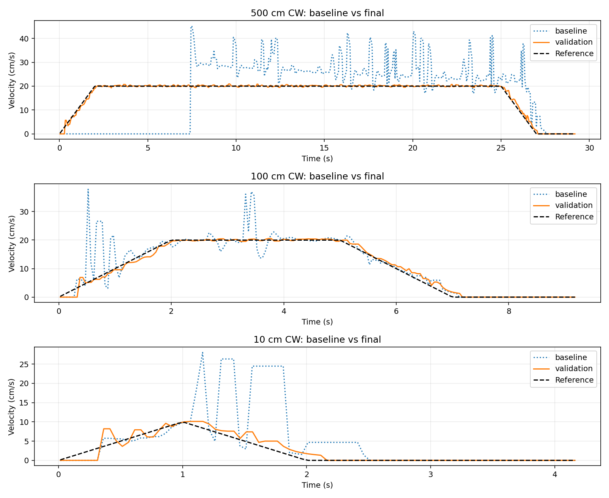
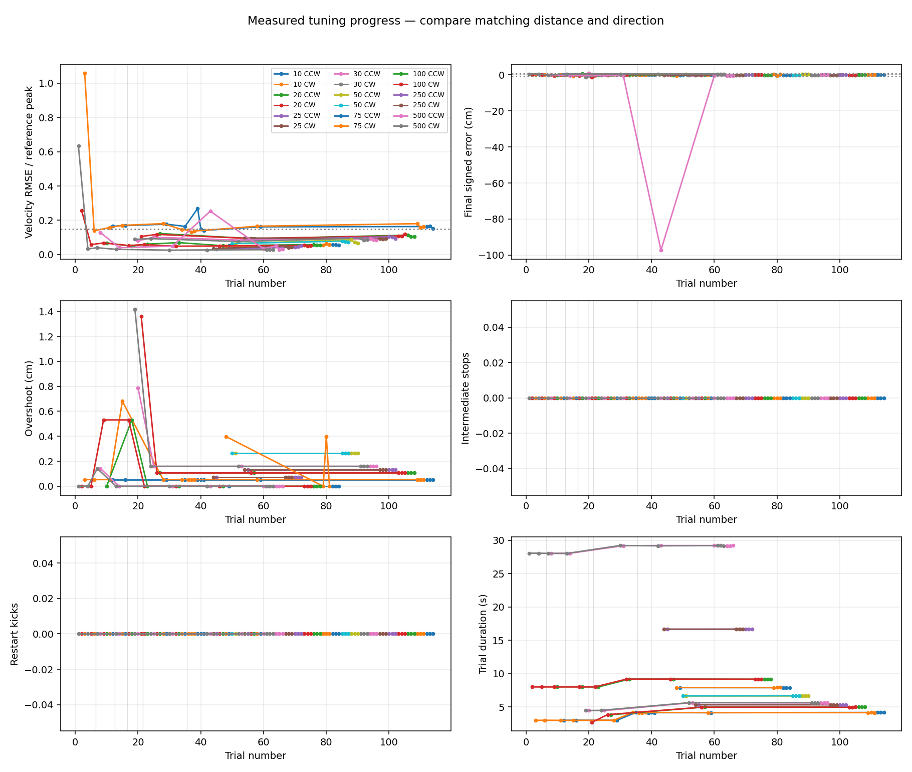

Measured COM3 shaft trials. Position tolerance: one pulse (0.628 cm). Green indicates numerical screening; graph review is also required. Loaded travel has not been tested.
Validation of shared configuration — 54/54 trials recorded. Charts include only the latest validation settings; unavailable metrics stay in the failed-trial table.
{
"vmax": 20,
"amax": 10,
"positionKp": 3,
"velocityKp": 13,
"velocityKi": 2,
"feedforward": 23,
"friction": 1.8
}



